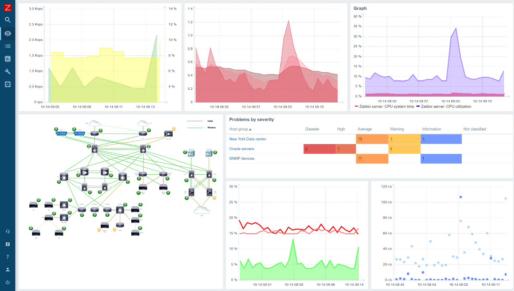
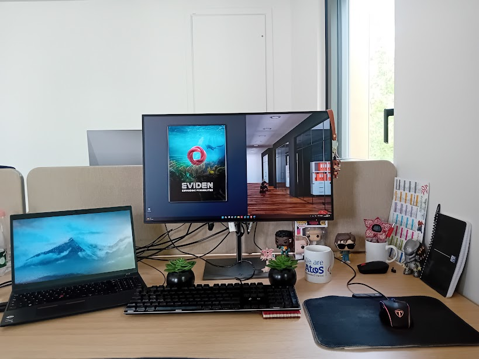

Galerie
Quelques images supplémentaires liées au projet.

GLPI - Gestion d'inventaire

Zabbix - Supervision réseau

Mon bureau en entreprise
Depuis 2023, j'effectue mon alternance en tant que technicien en cybersécurité et administration système chez Eviden, une entité du groupe Worlgrid. Ce contrat de deux ans me permet de consolider mes connaissances théoriques et de les appliquer dans un cadre professionnel exigeant, tout en acquérant de nouvelles compétences sur le terrain.
Atos est une entreprise française fondée en 1997 appartenant à l'entité Worldgrid. Atos est spécialisée dans les services numériques. En 2023, le groupe a été réorganisé en deux entités distinctes afin de mieux cibler leurs activités : Atos, qui conserve les services informatiques classiques, et Eviden, qui se concentre sur les technologies innovantes.
Eviden est aujourd’hui positionnée sur des secteurs à fort potentiel technologique comme le cloud, la cybersécurité, l’intelligence artificielle (IA) et le calcul haute performance (HPC).
Stanway est un projet visant à superviser et sécuriser les infrastructures réseau de RTE. Il s'agit d'une plateforme centralisée permettant de surveiller les équipements réseau, les serveurs et les applications critiques.
Mon rôle dans ce projet consiste à :
Mon alternance m’a permis de développer une solide expérience dans le domaine de l’administration systèmes et réseaux, à travers des missions concrètes et variées.
J’ai participé à des opérations de maintenance et de support technique telles que :
J’ai également travaillé sur des aspects plus automatisés et documentés de l’administration :
Chaque mois, Microsoft publie via son MSRC des bulletins de sécurité, souvent dans un format brut (XML, JSON, HTML) peu lisible pour les administrateurs.
J’ai automatisé la récupération de ces rapports, leur extraction, puis leur conversion dans un fichier Excel structuré et coloré. Ce fichier permet aux équipes de suivre rapidement les vulnérabilités corrigées, sans devoir analyser manuellement les données.
En parallèle, j’ai redessiné la carte réseau Zabbix de l’entreprise, à l’aide d’Inkscape, selon un cahier des charges. Le nouveau schéma a ensuite été intégré à la plateforme de supervision pour en améliorer la lisibilité.
Un enjeu majeur de mon alternance concernait la centralisation des éléments sensibles pouvant expirer : certificats, mots de passe, tokens, etc. Plus de 600 éléments étaient concernés, et leur suivi se faisait manuellement.
J’ai mené une étude comparative puis proposé GLPI comme solution. Après validation, j’ai réalisé son installation, sa configuration, et mis en place un système de notifications automatiques.
J’ai également développé un outil en Python permettant de :
Ce projet m’a demandé plusieurs mois de travail, incluant tests, documentation et mise en production.
Pour un client utilisant Zabbix, j’ai développé un outil qui interagit avec son API afin d’automatiser l’extraction de données.
À partir d’un fichier de configuration, le client peut définir des machines, groupes et éléments à surveiller. Mon script récupère alors les données, les filtre dans le temps, et les convertit automatiquement (booléens, entiers, etc.).
Le tout est exporté dans un fichier Excel, structuré, coloré et lisible, pour permettre au client d’exploiter facilement les résultats.
Cette expérience m'a permis de développer plusieurs compétences techniques et professionnelles :
Quelques images supplémentaires liées au projet.

